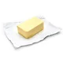
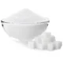

1 e 1/2 pacotes de bolacha maisena
120 g de margarina sem sal

11 maçãs gala sem casca e raladas
9 colheres (sopa) de açúcar refinado

2 colheres (sopa) de canela
1 colher (sopa) suco de limão
1 lata de leite condensado

1 lata de creme de leite

4 gemas
baunilha a gosto
1- Triture a bolacha no processador (pode ser no liquidificador) e adicione a margarina até obter uma farofa úmida e homogênea.
2-Forre a base de uma forma de fundo removível. Reserve.
3- Leve ao fogo médio: a maçã ralada, o açúcar e o limão e cozinhe até a a água secar.
4-Acrescente a canela e deixe esfriar e após isso espalhe sobre a base de biscoitos. Reserve.
5-Leve ao fogo em uma panela: o leite condensado, as gemas e a baunilha e mexa até engrossar. Desligue o fogo e acrescente o creme de leite.
6- Despeje por cima do doce de maçã e polvilhe com canela.
7- Leve a torta para assar em forno preaquecido a 180°C por cerca de 20 minutos.
8-Sirva gelada.